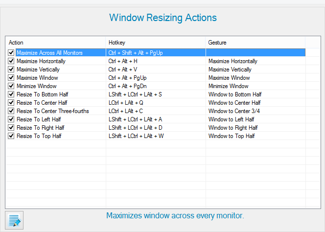

These types of actions resize the active window. They provide efficient ways to organize windows while giving maximum economy of space. Actions are explained in further detail through the help description.
